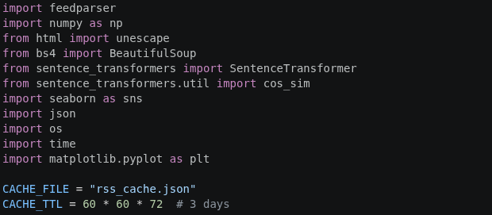
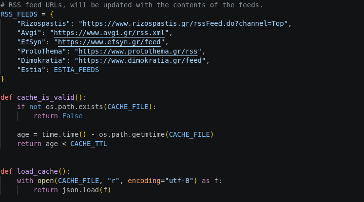
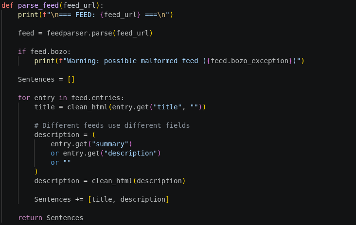
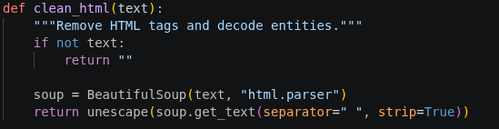
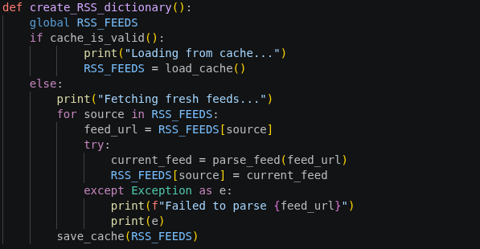
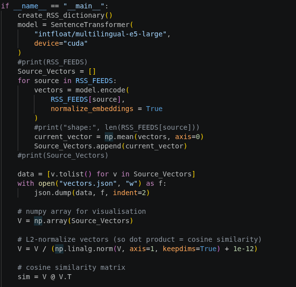
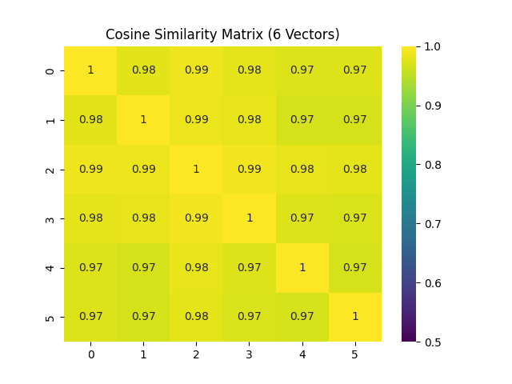

Describing the Diversity of Greek News Outlets
Introduction and Methodology Overview
In this project, we are trying to describe the diversity of Greek news outlets (in terms of content and lean) over time. The overall methodology, along with two ways to quantify the diversity, are presented in Part 1. Here, we will choose an encoder that maps similar phrases (in terms of their meaning, but also their style) to adjacent vectors. We will try to find an axis in the embedding vector space that represents ideology (and fail to do so).
Choosing the Encoder
For the encoder, we need one that is compatible with our Greek sentences. Thus, a good choice would be an encoder trained on multilingual data. These encoders can embed phrases with similar meaning (or "semantic content") to similar vectors, even if the phrases are in different languages! Thus, their learned structure from the English data transfers well to other languages, for which data is more limited. Since we are interested solely in embeddings, we will use multilingual-e5-large as our encoder.
Data Sourcing Strategy
In order to try and detect an ideological axis, we can use data from left-leaning and right-leaning news websites and compare their respective average embeddings. We suspect that their difference may represent an ideological axis, i.e., a linear combination of the encoded characteristics that represents the bias. We are thus sourcing the data from three left-leaning news sources (Rizospastis, Avgi, EfSyn), as well as three right-leaning ones (ProtoThema, Dimokratia, Estia). Instead of scraping their websites, it is recommended that we use their RSS feed, which is a machine-friendly summary of their latest stories. The following code extracts the data contained in their RSS feeds (no feed was found for ESTIA, so its front page contents were copied manually) and stores them in a json file.
Code Implementation
We start with imports and some global parameters:

We also create the RSS_FEEDS dictionary and some helper functions (not all of them are shown here):

Then we move on to the function that collects the data from a certain source:

Here, the helper function clean_html uses the BeautifulSoup library to extract human-readable sentences from the code:

Finally, we are able to update the RSS_FEEDS dictionary so that it contains the actual feeds from each source:

Analyzing the Embeddings
Once the feeds were saved in the cache (i.e., in rss_cache.json), they were manually cleaned to ensure that the outlet's ideological lean was reflected in all of the entries. Purely factual sentences, for example, were removed. Then, the model was loaded and the average embedding for each outlet was computed.
Our working hypothesis is that, if we take the mean of the three right-leaning ones and the mean of the three left-leaning ones, then the vectors' difference will reflect their different ideological focus. That is, the differences in their mean embeddings should be a result of their different ideology. Other potential differences in wording and content, that are not connected to their ideological lean, should be minimal and have a small effect on the overall mean embedding. If this was to be true, it would imply that each right-leaning outlet would be much closer in the embedding space to other right-leaning outlets, than to left-leaning ones. Therefore, we would expect that same-ideology outlets would form clusters.

The Embedding Space Geometry
In the implementation, the distance between the outlets' mean embeddings is expressed as the cosine of the two vectors. This is because the encoder is trained with this cosine similarity of two vectors as the loss function. Therefore, scaling a vector by a positive number, results in a difference (or loss) of zero in the model. Two sentences that are mapped to [1, 1, 1, ..., 1] and [3, 3, 3, ..., 3] are, in reality, identical.
It is interesting to examine this from a purely mathematical perspective. As a result of our remarks, we can see that the embedding space is not really a vector space. It is more correctly represented by a vector space with the elements {λv | λ>0} compressed into a single point. The result of this process is a sphere (you can imagine it in the 3D case). And the line that would express the ideological direction would correspond to a semicircle on the sphere. This geometry on the sphere (we can call it the embedding space geometry), seems to not have been studied in mathematics.
Results and Next Steps
Returning back to the cosine similarity and our clustering intuition, we would expect a higher similarity between outlets with similar bias. We can map out the similarities of the left-leaning and the right-leaning outlets (numbered 1,2,3 and 4,5,6 respectively) using seaborn's heatmap function. The output is the following:

We can see that the mean vectors are all practically identical, which puts into doubt the idea that their difference contains any valuable information. Moreover, the clusters that we predicted fail to materialise. Thus, our approach of finding an ideological axis in the embedding space does not work.
Moving forward, our approach will be to compute the overall variance of the embeddings (which will represent mainly their diversity in terms of semantic content) and to build an FNN that will hopefully succeed in extracting the bias from the embeddings. In the next part, we will continue by designing the scraper that will gather our data. The extracted data will then be fed into the encoder and an expression of variance will be used as a benchmark of diversity.